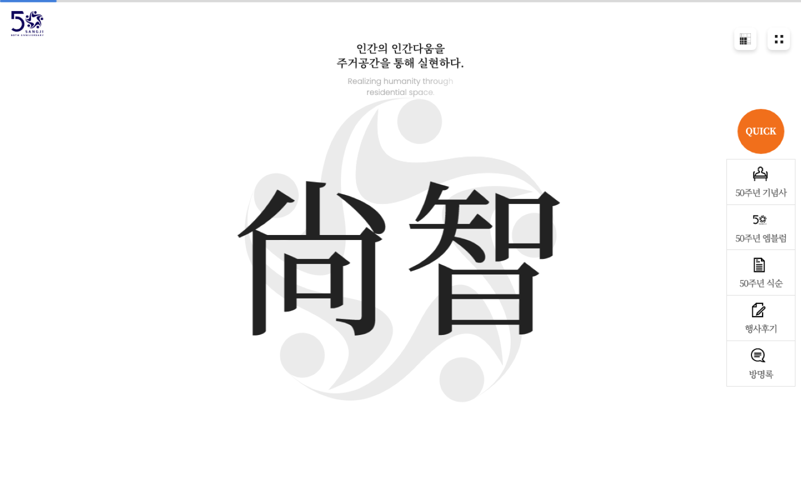
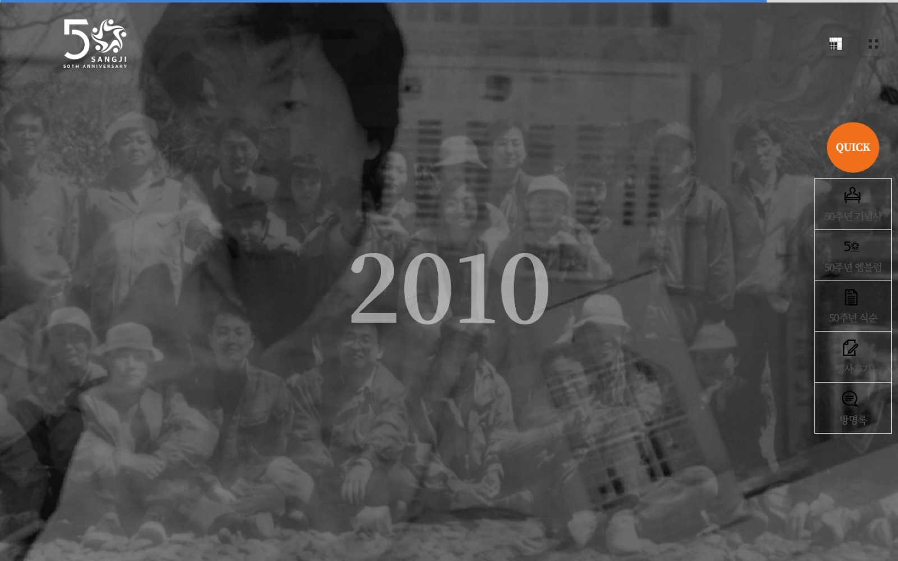
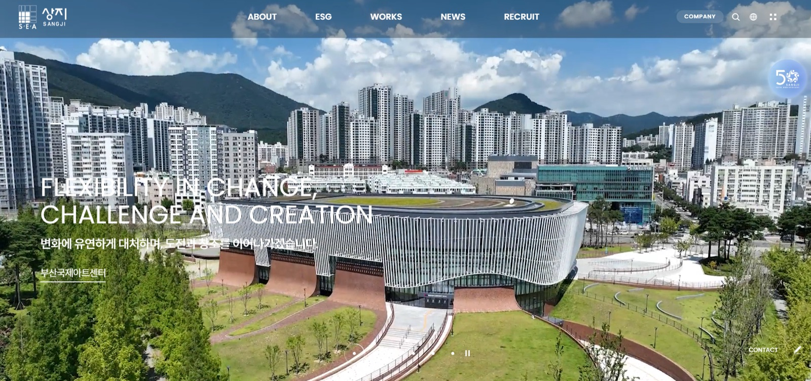

Case 03 상지건축 · 아리모아 · 2023 홈페이지 리뉴얼 · 2024 창립 50주년 사이트 기획
고객과 합의를 쌓고,팀이 일할 시간을 확보했습니다.
아리모아에서 상지건축 홈페이지 리뉴얼을 PM/PL로 맡았습니다. 승인과 수정 요청 시점이 불규칙한 상황에서 고객과 작업 일정을 조율하고, 예상 쟁점과 섹션별 발표 자료를 준비해 합의를 쌓았습니다. 이후 50주년 사이트에서는 관련 책과 자료를 분석해 콘텐츠와 장면을 기획했습니다.
- 기간
- 리뉴얼 2023 · 50주년 기획 2024
- 팀
- 아리모아 — 기획 · 디자인 · 퍼블리싱 · 개발
- 내 역할
- 리뉴얼 PM/PL — 요구사항 · IA · 화면설계 · 검수 · 오픈 / 50주년 — 사이트 구성 · 장면 기획
- 범위
- 홈페이지 리뉴얼(임직원 프로필 관리 → 영업자료 PDF) · 창립 50주년 사이트
- 지금
- sangji21c.co.kr · 50주년 /history
01
불규칙한 협의 속에서 팀의 작업 시간을 확보하다
당초 약 5개월로 계획된 프로젝트가 고객 협의 과정에서 약 1년까지 이어졌습니다. 갑작스러운 수정 요청과 불확실한 승인 시점은 다른 유지보수도 함께 맡은 내부 팀의 일정에 영향을 줬습니다.
고객과 회의·작업 일정을 지속적으로 협의하며 팀이 다른 업무를 진행할 시간을 확보했습니다. 내부 회의에서는 승인 과정의 예상 쟁점을 짚고 시안을 미리 준비했습니다.
각 섹션의 기획 의도와 디자인 근거를 발표 자료로 만들어 설명했습니다. 판단의 근거를 하나씩 제시하고 합의를 쌓으며, 끝나지 않을 것 같던 프로젝트를 마무리했습니다.
02
연혁을 표가 아니라 장면으로
50주년 관련 책과 자료를 읽고 분석해 콘텐츠의 맥락을 파악했습니다. 연혁은 한 화면에 한 장면 — 그 해의 사진 한 장 위에 연도 하나만 두고, 스크롤이 곧 시간이 되게 구성했습니다. 여는 화면은 회사 이름의 한자 尙智와 슬로건으로 시작합니다.
기념사 · 엠블럼 · 식순 · 행사 후기 · 방명록은 퀵 메뉴로 분리해, 본문은 연혁 한 줄에 집중하게 했습니다. 여러 외주사가 함께 결과물을 발표하는 자리에서도 기획 의도를 설명했고, 해당 발표에서는 추가 이의 없이 넘어갔습니다.
50th 창립 50주년 사이트 — 한 화면에 한 장면


Structure 사이트 구성 — 화면의 퀵 메뉴 기준
- 01여는 화면尙智 · “인간의 인간다움을 주거공간을 통해 실현하다”
- 02연혁 장면스크롤마다 한 해 — 사진 위에 연도만
- 03기념사 · 엠블럼 · 식순퀵 메뉴로 분리
- 04행사 후기 · 방명록행사 뒤에 채워지는 자리
·sangji21c.co.kr/history 운영 화면
03
요청 뒤의 목적을 기능으로
리뉴얼 중 고객이 “임직원 프로필을 관리하고 싶다”고 요청했습니다. 그대로 만들면 목록과 등록 화면이 전부입니다. 왜 필요한지 확인하니, 프로필을 영업자료로 쓰려는 목적이었습니다.
그래서 등록한 프로필을 영업자료 PDF로 내려받는 기능으로 구체화했습니다. 요청은 관리 기능이었지만, 필요한 것은 영업자료를 만드는 기능이었습니다.
요청대로“프로필을 관리하고 싶다”
프로필 목록등록 · 수정
목적을 듣고“영업자료로 쓰려고”
프로필 등록영업자료 PDF 다운로드
설명용으로 재구성한 흐름 · 파란 점선은 목적을 확인한 뒤 더해진 단계
2023 홈페이지 리뉴얼 — 같은 고객사의 첫 프로젝트

리뉴얼 범위 — 요구사항 · IA · 화면설계 · 검수 · 오픈, 그리고 임직원 프로필 관리 기능sangji21c.co.kr 운영 화면
Result 결과와 배운 점
- 프로젝트 마무리길어진 고객 협의를 정리하고 프로젝트를 완료했습니다.
고객과 일정을 협의하고 내부에서 예상 쟁점과 시안을 준비하며 합의를 쌓았습니다.
- 50주년장면 단위 연혁 구성이 sangji21c.co.kr/history에 그대로 있습니다.
여는 화면 → 연혁 장면 → 퀵 메뉴. 한 화면에 한 장면이라는 리듬이 운영 화면에 남아 있습니다.
- 리뉴얼프로필 관리 요청을 영업자료 PDF 다운로드로 구체화해 오픈.
요청을 그대로 만들지 않고, 쓰는 장면에 맞춰 기능을 정했습니다.
- 배운 것요청은 기능이 아니라, 목적의 단서다.
같은 고객사에서 두 번째 일을 맡았을 때도 이 순서로 시작했습니다.
Back 메인으로
상지 장면 ←Case 04 다음 사례
통합 CMS →